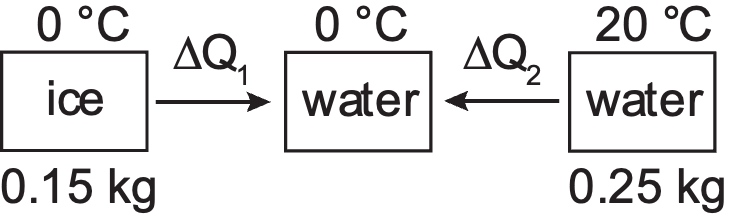

Rev.1
Q:
Rev.1. Why can the energy unit be used as the heat unit?
Ans: အဖြေနှင့် တွက်နည်းကြည့်ရန် နှိပ်ပါ
Ans: As heat is a form of energy, heat can be measured in energy unit.
Rev.1. Why can the energy unit be used as the heat unit?
Ans: As heat is a form of energy, heat can be measured in energy unit.
Eg.1. How many kilocalories are equal to 2 Btu?
Ans: | 1 kcal = 4184 J, 1 Btu= 1055J | |
2 Btu | = 2 Btu × \(\frac{1055 J}{1 Btu}\) × \(\frac{1 k cal}{4184 J}\) | |
= 0.504 kcal | ||
Rev.2. Why does the temperature of a substance increase?
Ans: The temperature of a substance increases because the internal energy of the substance increases.
Rev.3. What happen to the internal energy of a gas when it is heated?
Ans: The internal energy of a gas increases.
Eg.2. An egg contains 8 104 cal of the average energy value of food. If that calorie is the thermal unit used in the physical science, express the energy value of food of the egg in joules. (1 cal = 4.184 J)
Ans: | 1 cal = 4.184 J | |
8 104 cal | = 8 104 cal × \(\frac{4.184 J}{1 cal}\) | |
= 334 720 J | ||
Rev.4. How is thermal energy related to temperature change?
Ans: When the temperature of a substance increases, the thermal energy of the substance will increase.
Eg.3. When a piece of iron is cooled from 70 °C to 40 °C, the thermal energy released is 700 J. What is its thermal capacity?
Ans: | T1 = 70 °C, T2 = 40 °C, \(∆\)Q = 700 J | |
\(∆\)T = T1 – T2 = 70 – 40 = 30 °C = 30 K | ||
C | = \(\frac{∆Q}{∆T}\) | |
= \(\frac{700}{30}\) = 23.33 J K-1 | ||
No.1. The heat capacity of a piece of copper is 200 J C-1. What is the amount of heat required to raise its temperature from 25 °C to 80 °C?
Ans: | C = 200 J C-1, T1 = 25 °C, T2 = 80 °C, \(∆\)Q = ? | |
\(∆\)T = T2 – T1 = 80 – 25 = 55 °C = 55 K | ||
C | = \(\frac{∆Q}{∆T}\) | |
\(∆\)Q | = C \(∆\)T | |
= 200 × 55 = 11 000 J | ||
Rev.5. How does the specific heat capacity of water moderate the climate in a region near a large lake?
Ans: The specific heat capacity of water is much higher than that of land and air. For the same rise in temperature, water absorbs much more heat.
As a result, water heats up and cools down slowly, which helps to moderate the climate near a large lake by reducing extreme temperature changes.
Rev.6. Samples of copper and iron having equal mass heated with the same amount of heat will achieve different temperatures. Which sample will reach the higher temperature?
Ans: | \(∆\)Qgained by copper | = \(∆\)Qgained by iron |
m ccopper \(∆\)Tcopper | = m ciron \(∆\)Tiron | |
ccopper \(∆\)Tcopper | = ciron \(∆\)Tiron | |
ccopper < ciron , \(∆\)Tcopper > \(∆\)Tiron | ||
Copper will reach higher temperature. | ||
Eg.4. How much heat does it take to raise the temperature of 220 g of water from 25 C to 100 C? Specific heat capacity of water is 4184 J kg1 K1.
Ans: | m = 220 g = 220 × 10-3 kg, \(∆\)Q = ? T1 = 25 °C, T2 = 100 °C c = 4184 J kg1 K1 | |
\(∆\)T = T2 – T1 = 100 – 25 = 75 °C = 75 K | ||
\(∆\)Q | = m c \(∆\)T | |
= 220 × 10-3 × 4184 × 75 | ||
= 69 036 J | ||
No.2. How much heat must be added to change the temperature of 0.15 kg helium from 30 C to 80 C without changing the volume? (Specific heat capacity of helium is 5.18 103 J kg1 K1)
Ans: | m = 0.15 kg, T1 = 30 °C, T2 = 80 °C c = 5.18 103 J kg1 K1, \(∆\)Q = ? | |
\(∆\)T = T2 – T1 = 80 – 30 = 50 °C = 50 K | ||
\(∆\)Q | = m c \(∆\)T | |
= 0.15 × 5.18 103 × 50 | ||
= 38 850 J | ||
Eg.5. The specific heat capacity of 0.4 kg mass of a calorimeter is 627.6 J kg-1 K-1. A 0.55 kg substance is in that calorimeter. The temperature of the calorimeter increases by 4 K when 2450 J of energy is added to it. Find the specific heat capacity of the substance in the calorimeter.
Ans: | mc = 0.4 kg, cc = 627.6 J kg-1 K-1 m = 0.55 kg, \(∆\)T = 4 K, \(∆\)Q = 2450 J c = ? | |
c | = \(\frac{∆Q - {m}_{c} {c}_{c} ∆T}{m ∆T}\) | |
= \(\frac{2450 -(0.4 × 627.6 × 4)}{0.55 ×4}\) | ||
= 657.2 J kg-1 K-1 | ||
No.3. A calorimeter at 10 C contains 0.1 kg of carbon. The calorimeter is made of aluminium and has a mass of 0.02 kg. When 1000 J of energy is added to the calorimeter and carbon, the temperature increases to 30 °C. Specific heat capacity of aluminium is 898 J kg-1 K-1. Find the specific heat capacity of carbon.
Ans: | m = 0.1 kg, mc = 0.02 kg, \(∆\)Q = 1000 J T1 = 10 °C, T2 = 30 °C cc = 898 J kg-1 K-1, c = ? | |
\(∆\)T = T2 – T1 = 30 – 10 = 20 °C = 20 K | ||
c | = \(\frac{∆Q - {m}_{c} {c}_{c} ∆T}{m ∆T}\) | |
= \(\frac{1000 -(0.02 × 898 × 20)}{0.1 × 20}\) | ||
= 320.4 J kg-1 K-1 | ||
Rev.7. Can heat be extracted from water at 0 C?
Ans: Yes. When water changes into ice, heat is extracted.
Rev.8. Why is getting burnt by steam at 100 C worse than that by hot water of the same mass at 100 C?
Ans: Because steam at 100 C contains much more heat than water at 100 C. The specific latent heat of vaporization of water is very large.
Eg.6. How much heat is needed to change 5 kg of water at 100 C to steam? (specific latent heat of vaporization Lv = 2.255 106 J kg-1)
Ans: | m = 5 kg, Lv = 2.255 106 J kg-1 \(∆\)Q = ? | |
\(∆\)Q | = m Lv | |
= 5 × 2.255 106 = 11.38 106 J | ||
Eg.7. How much heat is required to melt 5 kg of ice at 0 °C? (specific latent heat of fusion of ice, Lf = 3.335 105 J kg-1)
Ans: | m = 5 kg, Lf = 3.335 105 J kg-1 \(∆\)Q = ? | |
\(∆\)Q | = m Lv | |
= 5 × 3.335 105 = 1.67 106 J | ||
Rev.9. A lead bullet at 327 °C melts after striking a steel plate. With what velocity does the bullet strike the steel plate? (Latent heat of fusion of lead = 24.52 103 J kg-1, the melting point of lead = 327 °C) (Hint: all of the kinetic energy of the bullet changes into heat energy)
Ans: | Lf = 24.52 103 J kg-1, v = ? | |
By the law of conservation of energy, | ||
KE | = \(∆\)Q | |
\(\frac{1}{2}\) m v2 | = m Lf | |
v | = \(\sqrt{2 {L}_{f}}\) | |
= \(\sqrt{2× 24.52 1{0}^{3} }\) | ||
= 221.45 m s-1 | ||
No.10. A 10 kg mass of copper block is dropped from a height of 50 m. Assume all of the potential energy change to heat, how much has the temperature increased when the copper block strikes the ground? (Specific heat capacity of copper = 385 J kg-1 K-1, g = 9.8 m s-2)
Ans: | m = 10 kg, h = 50 m, \(∆\)T = ? c = 385 J kg-1 K-1, g = 9.8 m s-2 | |
By the law of conservation of energy, | ||
\(∆\)Q | = PE | |
m c \(∆\)T | = m g h | |
\(∆\)T | = \(\frac{g h}{c}\) | |
= \(\frac{9.8 × 50}{385}\) | ||
= 1.273 °C = 1.273 K | ||
No.6. 0.5 kg of water at 30 C is placed in refrigerator which can remove heat at an average rate of 25 J s-1. How long will it take to cool the water to 5 C? (Specific heat capacity of water = 4184 J kg-1 K-1)
Ans: | m = 0.5 kg, T1 = 30 C, T2 = 5 C c = 4184 J kg-1 K-1, t = ? | |
\(∆\)T = T1 – T2 = 30 – 5 = 25 °C = 25 K | ||
The heat lost by water (from 30\(℃\) to 5\(℃\)) | ||
\(∆\)Q | = m c \(∆\)T | |
= 0.5 × 4184 × 25 | ||
= 52 300 J | ||
\(\frac{∆Q}{t}\) | = 25 J s-1 | |
t | = \(\frac{∆Q}{25}\) | |
= \(\frac{52 300}{25}\) = 2092 s | ||
= 2092 s × \(\frac{1 min}{60 s}\) = 34.78 min | ||
No.7. How much heat is needed to melt 10 kg of ice at -10 C? (Specific latent heat of fusion of ice = 3.335 105 J kg-1, Specific heat capacity of ice = 2089 J kg-1 K-1.)
Ans: | ||
m = 10 kg, Lf = 3.335 105 J kg-1 cice = 2089 J kg-1 K-1 | ||
The heat needed by ice (from -10\(℃\) to 0\(℃\)) | ||
\(∆\)Q1 | = m cice \(∆\)T | |
= 10 × 2089 × {0 \(-\) (\(-\)10)} | ||
= 208 900 J | ||
The heat needed to melt the ice | ||
\(∆\)Q2 | = m Lf | |
= 10 × 3.335 105 | ||
= 3.335 106 J | ||
The total heat needed | ||
\(∆\)Q | = \(∆\)Q1 + \(∆\)Q2 | |
= 208 900 + 3.335 106 | ||
= 3.5439 106 J | ||
No.8. Does all the ice melt when 0.15 kg of ice at 0 C is put into 0.25 kg of water at 20 °C? What is the final temperature?
Ans: |  | |
mice = 0.15 kg, mw = 0.25 kg Lf = 3.335 105 J kg-1 cw = 4184 J kg-1 K-1 | ||
The heat needed to melt the all ice | ||
\(∆\)Q1 | = mice Lf | |
= 0.15 × 3.335 105 | ||
= 50 025 J | ||
The heat lost by water (from 20\(℃\) to 0\(℃\)) | ||
\(∆\)Q2 | = mw cw \(∆\)T | |
= 0.25 × 4184 × (20 – 0) | ||
= 20 920 J | ||
\(∆\)Q1 > \(∆\)Q2 All the ice does not melt. | ||
The final temperature will be at 0 C. | ||
No.4. 1 L of water at 100 C is added to 4 L of water at 20 °C. What will be the final temperature of the water? (Specific heat capacity of water is 4184 J kg-1 K-1)
Ans: | |||
V1 = 4 L, m1 = 4 kg V2 = 1 L, m2 = 1 kg | |||
cw = 4184 J kg-1 K-1 | |||
The heat gained by water (from 20\(℃\) to T) | |||
\(∆\)Qgained | = m1 cw \(∆\)T1 | ||
= 4 × 4184 (T – 20) | |||
The heat lost by water (from 100\(℃\) to T) | |||
\(∆\)Qlost | = m2 cw \(∆\)T2 | ||
= 1 × 4184 × (100 – T) | |||
By the law of heat exchanged, | |||
\(∆\)Qgained | = \(∆\)Qlost | ||
4 (T – 20) | = 1 (100 – T) | ||
4 T – 80 | = 100 – T | ||
5 T | = 180 | ||
T | = 36 \(℃\) | ||
No.5. 0.2 kg coffee at 80 C is poured into 0.5 kg of glass at 20 °C. What is the final temperature of coffee? (Specific heat capacity of water = 4184 J kg-1 K-1, Specific heat capacity of glass = 837 J kg-1 K-1)
Ans: | |||
mg = 0.5 kg, mc = 0.2 kg | |||
cc = 4184 J kg-1 K-1 cg = 837 J kg-1 K-1 | |||
The heat gained by glass (from 20 \(℃\) to T) | |||
\(∆\)Qgained | = mg cg \(∆\)T1 | ||
= 0.5 × 837 (T – 20) | |||
The heat lost by coffee (from 80 \(℃\) to T) | |||
\(∆\)Qlost | = mc cc \(∆\)T2 | ||
= 0.2 × 4184 × (80 – T) | |||
By the law of heat exchanged, | |||
\(∆\)Qgained | = \(∆\)Qlost | ||
0.5 × 837 (T – 20) | = 0.2 × 4184 × (80 – T) | ||
T – 20 | = \(\frac{0.2 × 4184 }{0.5 × 837}\) (80 – T) | ||
T – 20 | = 2 (80 – T) | ||
T – 20 | = 160 – 2 T | ||
3 T | = 180 | ||
T | = 60 \(℃\) | ||
No.9. 0.2 kg of water at 0 C is poured into a container having liquid nitrogen at -196 C by mistake. How much nitrogen vaporizes? The boiling point of nitrogen is -196 C and its latent heat of vaporization is 200 800 J kg-1.
Ans: | |||
mw = mice = 0.2 kg, mN = ? | |||
cice = 2089 J kg-1 K-1 Lv = 200 800 J kg-1 Lf = 3.335 105 J kg-1 | |||
The heat needed to vaporize N2(L) | |||
\(∆\)Q1 | = mN Lv | ||
= 200 800 mN | |||
The heat lost by water to freeze | |||
\(∆\)Q3 | = mw Lf | ||
= 0.2 × 3.335 105 | |||
= 66 670 J | |||
The heat lost by ice (from 0 \(℃\) to -196\(℃\)) | |||
\(∆\)Q2 | = mice cice \(∆\)T | ||
= 0.2 × 2089 × {0 – (-196)} | |||
= 81 888.8 J | |||
By the law of heat exchanged, | |||
\(∆\)Qgained | = \(∆\)Qlost | ||
\(∆\)Q1 | = \(∆\)Q2 + \(∆\)Q3 | ||
200 800 mN | = 81 888.8 + 66 670 | ||
mN | = 0.74 kg | ||
Eg.8. Ice cubes at -10 °C with a total mass of 0.045 kg are mixed with 0.3 kg tea at 30 °C. What is the final equilibrium temperature? (The specific heat capacity of tea is the same as that of water, the specific heat capacity of ice, cice = 2089 J kg-1 K-1.)
Ans: | |||
mice = 0.045 kg, mtea = 0.03 kg | |||
cice = 2089 J kg-1 K-1 ctea = 4184 J kg-1 K-1 Lf = 3.335 105 J kg-1 | |||
The heat needed by ice (from – 10\(℃\) to 0\(℃\)) | |||
\(∆\)Q1 | = mice cice \(∆\)T | ||
= 0.045 × 2089 × {0 – (\(-\)10)} | |||
= 940.05 J | |||
The heat needed to melt the ice | |||
\(∆\)Q2 | = mice Lf | ||
= 0.045 × 3.335 105 | |||
= 15 007.5 J | |||
The heat needed by water (from 0\(℃\) to T) | |||
\(∆\)Q3 | = mw cw \(∆\)T | ||
= 0.045 × 4184 × (T – 0) | |||
= (188.28 T) J | |||
The heat lost by tea (from 30\(℃\) to T) | |||
\(∆\)Q4 | = mtea ctea \(∆\)T | ||
= 0.3 × 4184 × (30 – T) | |||
= 37 656 – 1 255.2 T | |||
By the law of heat exchanged, | |||
\(∆\)Qgained | = \(∆\)Qlost | ||
\(∆\)Q1 + \(∆\)Q2 + \(∆\)Q3 | = \(∆\)Q4 | ||
940.05+15007.5+188.28T | = 37656–1255.2 T | ||
1443.48 T | = 21 708.45 | ||
T | = 15.04\(℃\) | ||
Rev.10. How does the melting point of ice and boiling point of water change with pressure?
Ans: The melting point of ice decreases as the pressure increases.
The boiling point of water increase as the pressure increases.